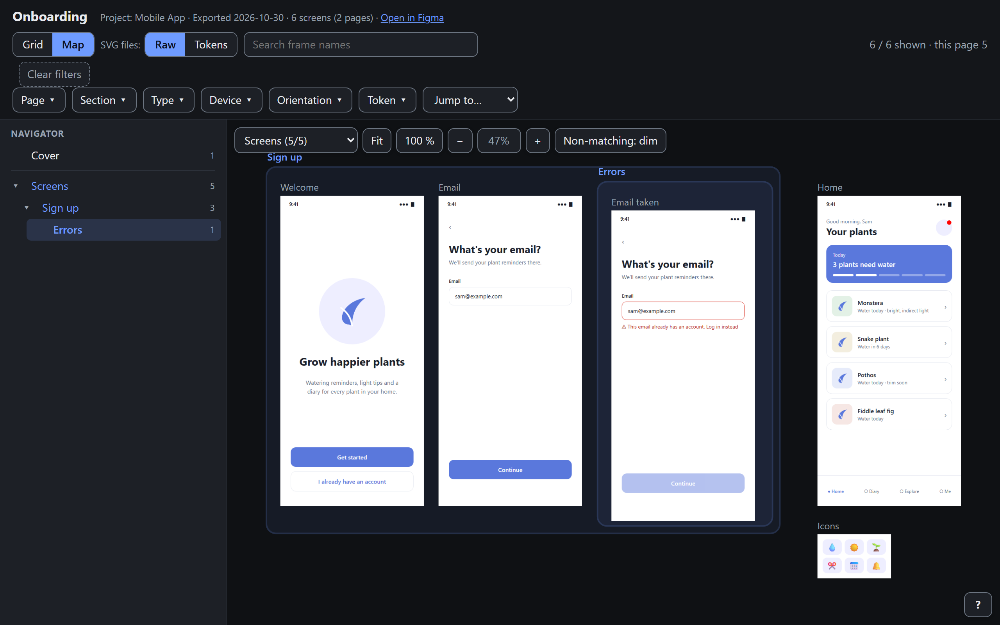
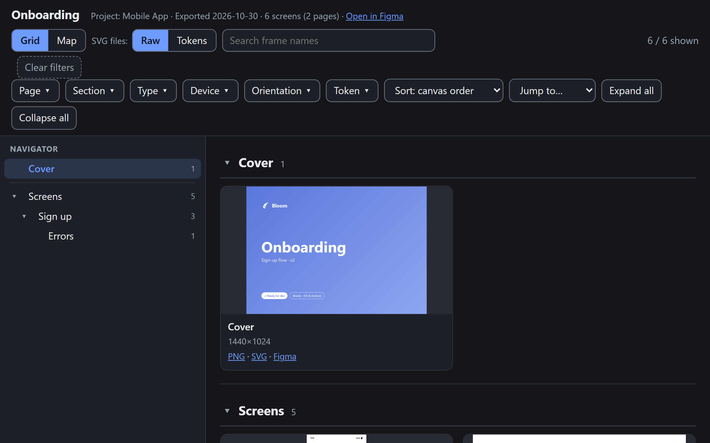
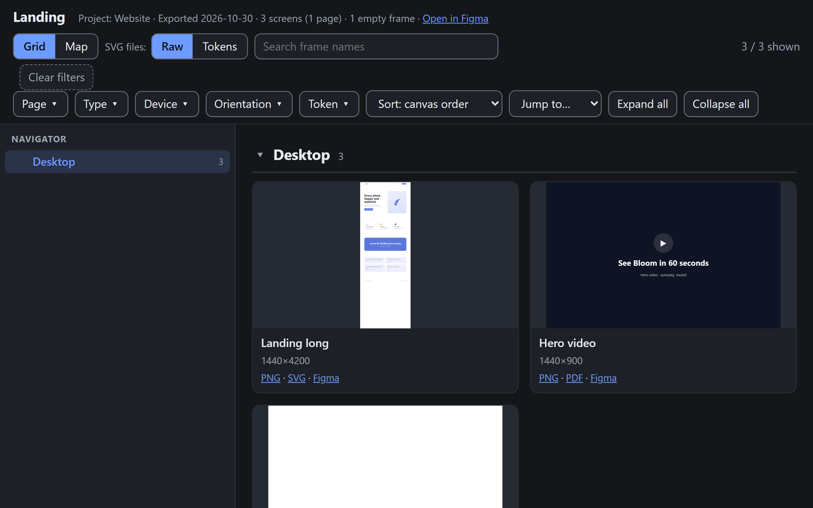
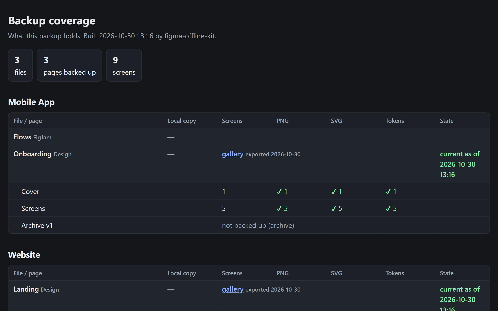
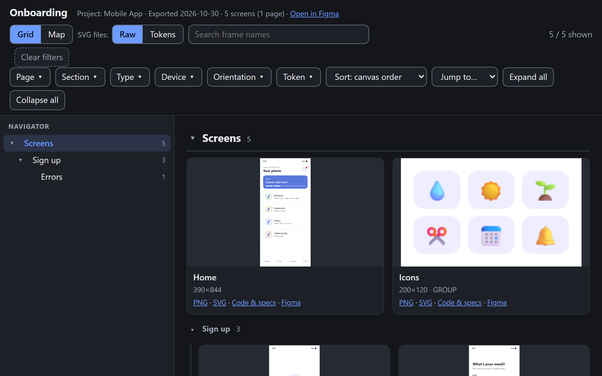
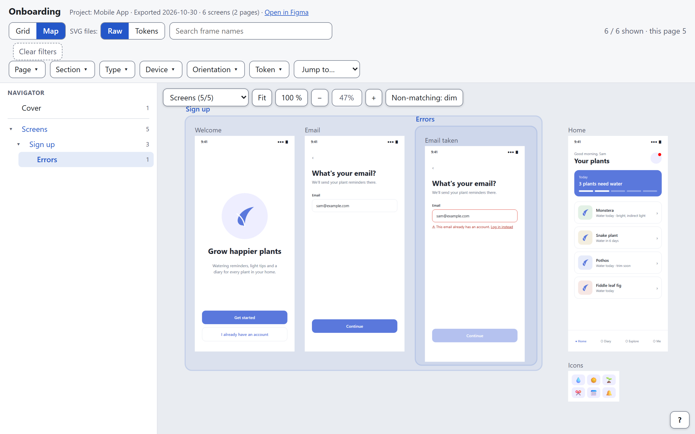
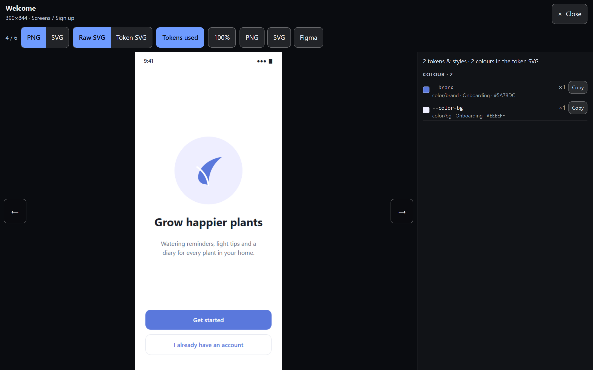
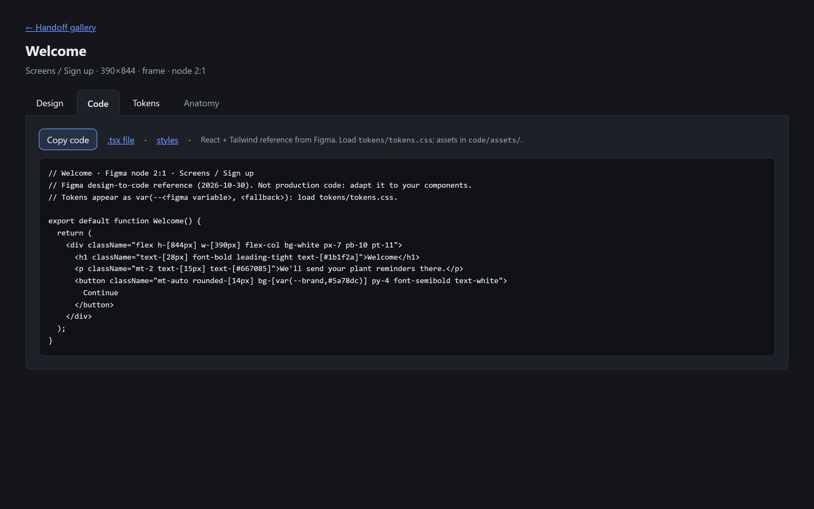

فیگما قطع شد؟
کارتان متوقف نمیشودFigma’s down?
Your work isn’t.
از تیم فیگما، یا فقط فایلهایی که میخواهید، روی دیسک خودتان نسخهٔ پشتیبان بگیرید و آفلاین، مثل بوم فیگما، در آن بگردید.
Back up your Figma team, or just the files you pick, to your own disk, and browse it offline like the canvas.
- PNG + SVG
- گالری آفلاین
- فایل fig
- توکنهای طراحی
- تحویل به برنامهنویس
- PNG + SVG
- Offline gallery
- .fig files
- Design tokens
- Dev handoff

نمونهٔ زندهLive demo
خروجی واقعی کیت از یک تیم ساختگی به اسم Bloom. همین صفحهها روی دیسک شما هم بدون اینترنت باز میشوند.
The kit’s real output for a made-up team called Bloom. On your disk, the same pages open with no internet.




چه چیزی تحویل میگیریدWhat you get
همهچیز روی دیسک خودتان، در پوشههایی به ترتیب پروژه، فایل، صفحه و سکشن.
Everything on your own disk, in folders by project, file, page and section.
گالری آفلاین برای هر فایلAn offline gallery for every file
همهٔ فریمها بهصورت PNG و SVG. مثل بوم فیگما در آنها بگردید: نقشهای از جای هر فریم، درخت صفحهها، فیلتر، جستوجو و نمایشگر تمامصفحه. از روی دیسک باز میشود و اینترنت لازم ندارد. با تم روشن و تیره.
Every frame as PNG and SVG. Browse them like the canvas: a map of where each frame sits, a page tree, filters, search and a full-screen viewer. It opens from disk, no internet needed, in light or dark.

توکنهای طراحی کنار هر صفحهDesign tokens next to every screen
متغیرهای شما بهصورت tokens.css و _tokens.scss. برای هر صفحه، توکنها و استایلهایی که استفاده کرده و رنگهایی که به هیچ توکنی وصل نیستند.
Your variables as tokens.css and _tokens.scss. For each screen, the tokens and styles it uses, and the colours bound to nothing.

بستهٔ تحویل به برنامهنویسA handoff package for developers
برای صفحههایی که برنامهنویس لازم دارد: برای هر فریم یک صفحه با طراحی، کد، توکنها و آناتومی، خروجی design-to-code خود فیگما و مشخصات کامپوننتها.
For the pages a developer needs: one page per frame with design, code, tokens and anatomy, Figma’s own design-to-code output, and component specs.
بیشتر ←More →
گزارشی از آنچه داریدProof of what you have
صفحهٔ COVERAGE.html همهٔ پروژهها، فایلها و صفحهها را نشان میدهد: چه چیزی پشتیبان شده، چه چیزی و چرا کنار مانده، و کدام فایلها از آن به بعد در فیگما عوض شدهاند. هر پروژه هم در یک آرشیو آزموده بسته میشود.
COVERAGE.html shows every project, file and page: what’s backed up, what’s left out and why, and which files changed in Figma since. Each project is packed into a tested archive.
💾 و خود فایلهاAnd the real files
نسخههای محلی fig، jam و deck از فیگمای دسکتاپ. هوش مصنوعیِ دارای کنترل دسکتاپ ذخیرهشان میکند، یا خودتان Save را میزنید.
Local .fig, .jam and .deck copies from Figma desktop, saved by an AI with desktop control, or by you pressing Save.
🔄 بهروز ماندنStays current
فایلهایی که بعد از پشتیبانگیری در فیگما عوض شدهاند پیدا میشوند و دوباره خروجی میگیرند، بدون اینکه چیزی پاک شود.
Files changed in Figma since the backup are found and exported again, without deleting anything.
📂 فقط آنچه لازم داریدOnly what you need
کل تیم یا فقط چند فایل با لینک. صفحهها را تکتک انتخاب کنید؛ صفحههای آرشیو و جداکننده خودبهخود کنار میمانند.
A whole team or just a few files by link. Pick pages one by one; archive and divider pages are left out by default.
چطور کار میکندHow it works
هوش مصنوعی فقط راهاندازی را انجام میدهد. خود پشتیبانگیری پایتون خالص است و توکن هوش مصنوعی مصرف نمیکند.
An AI only does the setup. The backup itself is plain Python, so it uses no AI tokens.
- ۱1
بررسیDoctor
پایتون، اینترنت، توکن و ابزارها را بررسی میکند و میگوید چه کاری باید بکنید.
Checks Python, network, token and tools, and lists what you need to do.
- ۲2
پرسشهاQuestions
یک دور سؤال: لینک تیم یا فایلها، محل ذخیره، نحوهٔ اجرا و افزونهها.
One round: a team link or file links, where to save, how to run, which extras.
- ۳3
برنامهPlan
فیگما را میگردد و تعداد صفحهها، زمان و حجم را تخمین میزند.
Scans Figma and estimates screens, time and size.
- ۴4
صفحههاPages
همهٔ صفحهها با ✔ یا ✖؛ تا شما تأیید نکنید، اجرا شروع نمیشود.
Every page with ✔ or ✖; the run waits until you confirm.
- ۵5
اجراRun
در پسزمینه خروجی میگیرد، با بستن برنامه متوقف نمیشود و قطعیها را صبر میکند.
Exports in the background, survives closing the app, waits out outages.
- ۶6
پایانClose
همهچیز را وارسی میکند، صفحهٔ پوشش را میسازد و آرشیوها را میبندد.
Verifies everything, writes the coverage page and packs archives.
شروع در یک دقیقهStart in a minute
پایتون ۳٫۱۰ یا جدیدتر باید نصب باشد (رایگان است و کیت با آن کار میکند). بعد یکی از این سه راه:
You need Python 3.10 or newer (free; the kit runs on it). Then pick one:
🖱️ با دوبار کلیک (سادهترین)Double-click (the easiest)
از حالت فشرده دربیاورید و در ویندوز روی Start.bat و در مک روی Start.command دوبار کلیک کنید. اول زبان را میپرسد (فارسی / English)، بعد قدمبهقدم سؤال میپرسد و از همان جایی که ماندهاید ادامه میدهد. اگر پایتون نصب نباشد، پیشنهاد میدهد نصبش کند و اول از شما میپرسد.
Unzip it and double-click Start.bat on Windows or Start.command on macOS. It asks your language (فارسی / English), then one step at a time, and picks up where you left off. If Python is missing, it offers to install it and asks first.
ویندوز برای فایلهای اینترنتی هشدار میدهد. برای اینکه نیاید، قبل از باز کردن ZIP روی آن راستکلیک کنید ← Properties ← تیک Unblock ← OK. وگرنه در «Open File – Security Warning» دکمهٔ Run را بزنید (یا در «Windows protected your PC»: More info ← Run anyway). مک: System Settings ← Privacy & Security ← Open Anyway. در ویندوز پنجرهٔ Start انگلیسی است؛ گزارش و صفحهها فارسی میشوند.
Windows warns about files from the internet. To skip that, before unzipping right-click the ZIP → Properties → tick Unblock → OK. Otherwise click Run on “Open File – Security Warning” (or More info → Run anyway on “Windows protected your PC”). macOS: System Settings → Privacy & Security → Open Anyway.
🤖 با دستیار هوش مصنوعیWith an AI assistant
مخزن کامل را بگیرید (ZIP یا git clone)، پوشه را در برنامهای باز کنید که میتواند روی کامپیوترتان دستور اجرا کند (Claude Code یا Claude دسکتاپ، Cursor، Copilot در حالت agent، Gemini CLI یا Codex) و بنویسید:
Get the full repo (ZIP or git clone), open the folder in an AI app that can run commands on your computer (Claude Code or Claude desktop, Cursor, Copilot agent mode, Gemini CLI, Codex), and say:
دستیار AGENTS.md را میخواند، سؤالها را در یک پیام میپرسد و بقیه را انجام میدهد. اگر فارسی بنویسید، فارسی جواب میدهد.
It reads AGENTS.md, asks a few questions in one message, and runs the rest.
⌨️ بدون هوش مصنوعیOn your own
در ترمینال، داخل مخزن یا پوشهٔ app نسخهٔ دانلودی:
In a terminal, inside the repo or the download's app folder:
python kit.py start # guided (--lang fa|en) # or one at a time: python kit.py doctor # what's ready python kit.py init # a few questions python kit.py plan # how much, how long python kit.py pages # choose pages python kit.py run # runs in the background python kit.py close # check and pack
یک توکن فیگما با دسترسی خواندن هم لازم است. جایش فایل workstation/.env داخل پوشهٔ پشتیبان است (پیشفرض: ~/figma-backup/workstation/.env). راهنمای قدمبهقدم مسیر را نشان میدهد و میگذارد همانجا بچسبانیدش، یا آن را در Figma token.txt کنار Start بچسبانید. همهٔ تنظیمات، قدمها و تصمیمها در REPORT.md بالای پوشهٔ پشتیبان نوشته میشود. کیت بقیه را خودش بررسی میکند.
You also need a read-only Figma token. It goes in workstation/.env inside your backup folder (default ~/figma-backup/workstation/.env, on Windows C:\Users\<you>\figma-backup\workstation\.env); the guided start shows the path and lets you paste it there, or paste it into Figma token.txt next to Start. Every setting, step and decision is written down in REPORT.md at the top of the backup folder. The kit checks everything else.
ایمن از ابتداSafe by design
کیت فقط کپی میگیرد؛ به کار شما در فیگما دست نمیزند.
The kit only copies; it never touches your work in Figma.
هیچوقت چیزی را ویرایش، جابهجا، اشتراکگذاری یا حذف نمیکند.
It never edits, moves, shares or deletes anything there.
در workstation/.env میماند و هیچوقت چاپ یا در لاگ نوشته نمیشود.
It stays in workstation/.env and is never printed or logged.
دستکم ۱٫۵ ثانیه بین درخواستها و رعایت کامل محدودیتها.
At least 1.5 s between calls, rate limits honoured in full.
نسخهٔ قبلی فایلهای بهروزشده به temp/replaced/ میرود.
Old copies of refreshed files move to temp/replaced/.
پرسشهای رایجFAQ
حتماً هوش مصنوعی لازم است؟Do I need an AI?
نه. هر قدم یک دستور python kit.py … است. هوش مصنوعی فقط کار را به گفتوگو تبدیل میکند، و اگر کنترل دسکتاپ داشته باشد، فایلهای fig را هم برایتان ذخیره میکند.
No. Every step is a python kit.py … command. An AI makes it a conversation, and with desktop control it can also save the .fig copies for you.
چه پلنی از فیگما لازم است؟Which Figma plan do I need?
هر پلنی برای صفحهها، گالری، نسخههای محلی و تحویل به برنامهنویس کافی است. خواندن متغیرها از REST API پلن Enterprise میخواهد؛ در پلنهای دیگر، از MCP فیگما یا خروجی متغیرهای خود فیگما استفاده میشود.
Any plan works for screens, galleries, local copies and handoff. Reading variables through the REST API needs Enterprise; on other plans, the kit uses Figma’s MCP or Figma’s own variables export.
چقدر طول میکشد و چه حجمی دارد؟How long does it take, and how big is it?
دستور plan هر دو را تخمین میزند. بهطور تقریبی: حدود ۱۰ صفحه در دقیقه برای PNG و SVG، و حدود ۰٫۶۵ مگابایت برای هر صفحه. نسخههای محلی به حدود ۴۰ فایل در روز محدودند.
plan estimates both. Roughly: about 10 screens a minute for PNG + SVG, and about 0.65 MB per screen. Local copies are limited to about 40 a day.
میتوانم فقط چند فایل را پشتیبان بگیرم؟Can I back up only some files?
بله. در سؤالها بهجای لینک تیم، لینک فایلها را بدهید. صفحههای هر فایل را هم میتوانید جدا انتخاب کنید.
Yes. In the interview, paste file links instead of a team link. You can also choose pages per file.
اگر برنامه یا لپتاپ را ببندم چه میشود؟Can I close the app or my laptop during the run?
بستن برنامه مشکلی ندارد و اجرا در پسزمینه ادامه پیدا میکند. اگر کامپیوتر خوابید یا ریاستارت شد، python kit.py resume را بزنید.
Closing the app is fine: the run continues in the background. If the computer sleeps or restarts, run python kit.py resume.
چطور یک فایل را به فیگما برگردانم؟How do I restore a file into Figma?
فایل fig را داخل فیگما بکشید، یا از منوی Import فیگما استفاده کنید.
Drag its .fig into Figma, or use Figma → Import.